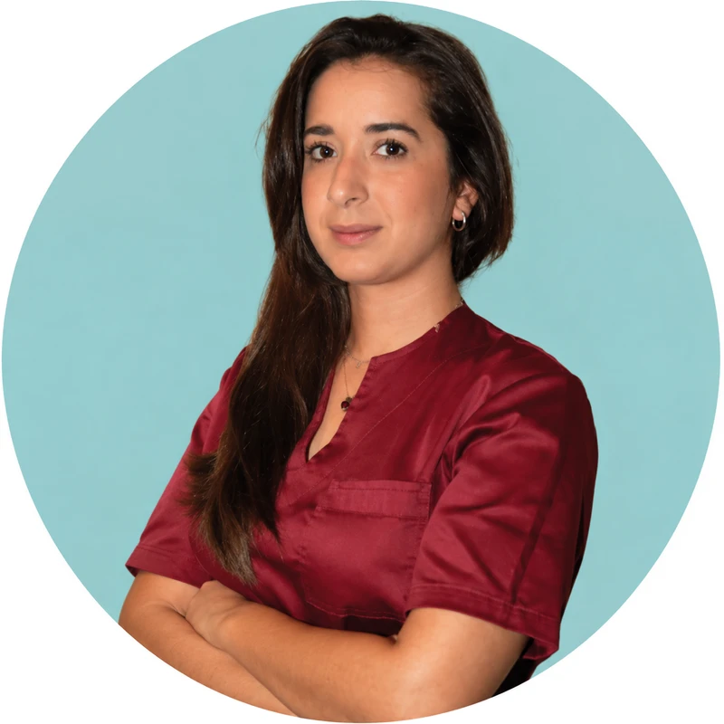
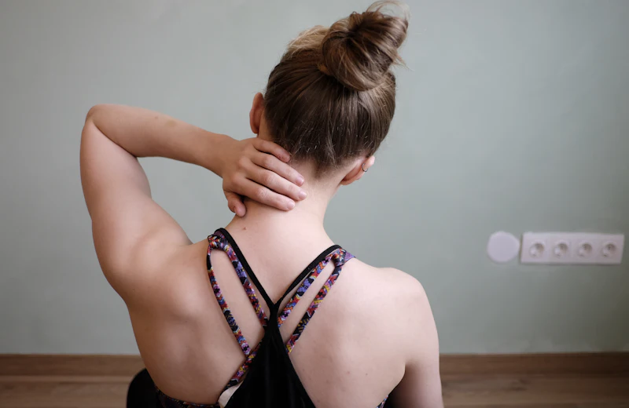
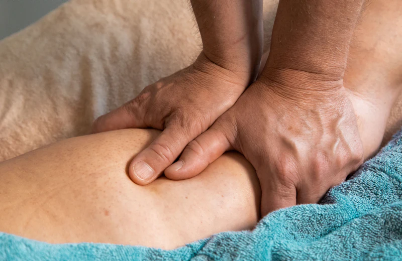
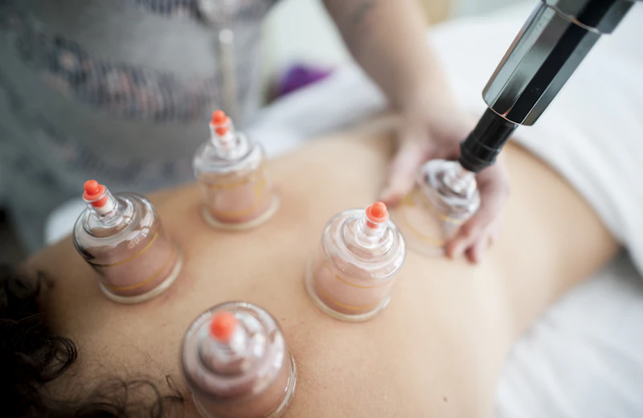

Chi convive con tensioni e dolori muscolari
Per chi riferisce tensioni, contratture o fastidi a livello cervicale, dorsale e lombare e desidera una valutazione osteopatica personalizzata.
Un approccio osteopatico personalizzato, fondato sull'ascolto, sulla valutazione e sull'attenzione alle esigenze di ogni persona.
Osteopatia Trattamenti manuali Benessere muscoloscheletrico

Sono Mariagrazia Micele, Osteopata D.O., diplomata presso l'A.T. Still Academy di Bari.
Il mio percorso professionale nasce dall'interesse per il corpo umano, il movimento e l'importanza di un approccio attento alle caratteristiche di ogni persona.
Credo che ogni trattamento debba iniziare dall'ascolto, dalla comprensione delle esigenze individuali e da una valutazione accurata.
Alla pratica osteopatica affianco l'impegno nella formazione, come assistente alla docenza presso ATSAI, un'esperienza che accompagna il mio interesse per lo studio e l'aggiornamento continuo.
Nel mio lavoro utilizzo tecniche manuali personalizzate, con l'obiettivo di accompagnare le persone in un percorso attento alla mobilità e al benessere muscoloscheletrico.
Ogni persona è diversa. Per questo, ogni percorso merita attenzione e cura.
L'osteopatia parte dalla valutazione individuale, considerando le caratteristiche della persona e le sue necessità.
Per chi riferisce tensioni, contratture o fastidi a livello cervicale, dorsale e lombare e desidera una valutazione osteopatica personalizzata.
Per chi trascorre molte ore seduto, svolge attività ripetitive o avverte rigidità e limitazioni nei movimenti quotidiani.
Per chi desidera dedicare maggiore attenzione alla propria mobilità e al benessere muscoloscheletrico, attraverso un percorso adattato alle proprie esigenze.
Non esistono percorsi identici, perché ogni persona porta con sé esigenze, abitudini e caratteristiche differenti. Per questo considero fondamentale un approccio che unisca ascolto, valutazione e personalizzazione.
Ogni incontro parte dalle esigenze della persona e dalla comprensione della sua storia.
Osservazione e valutazione osteopatica orientano la scelta delle tecniche più appropriate.
Il trattamento viene adattato alle caratteristiche individuali e alle necessità emerse durante la valutazione.
Tecniche osteopatiche scelte con attenzione alla mobilità e alla funzionalità muscoloscheletrica, nell'ambito delle mie competenze professionali.
Un percorso osteopatico orientato alla valutazione della persona e all'utilizzo di tecniche manuali appropriate.

Mi occupo di sciatalgie, dolori lombari, dorsali e cervicali, mal di testa e vertigini a partire da un'accurata valutazione posturale e della mobilità vertebrale. Il trattamento, definito sulla base di quanto emerso, si avvale di tecniche manuali mirate a migliorare la mobilità articolare e a ridurre le tensioni dei tessuti, in integrazione con l'inquadramento medico ove necessario.
In presenza di reflusso gastroesofageo, gonfiore addominale e stitichezza, l'osteopatia viscerale valuta la mobilità del diaframma, degli organi addominali e dei tessuti di sostegno. Attraverso tecniche manuali dolci e non invasive, il trattamento si propone come supporto complementare al percorso indicato dal medico curante.

Contratture muscolari, dolori mestruali e disturbi del sonno vengono affrontati con un approccio globale, che considera la persona nel suo insieme, dal sistema muscoloscheletrico alla regione pelvica. Il trattamento manuale è orientato a ridurre le tensioni e a favorire uno stato di rilassamento, nel rispetto delle esigenze individuali.

A integrazione del trattamento osteopatico, quando indicato, propongo la Cupping therapy, tecnica che impiega coppette a pressione negativa per agire sui tessuti molli, e la Stimolazione algica tessutale neuroregolatrice secondo il metodo Furter. L'impiego di ciascuna tecnica è valutato individualmente, sulla base delle caratteristiche della persona.
Mi scrivi per richiedere informazioni e concordiamo insieme un appuntamento nella sede più comoda per te.
Il primo incontro inizia dalla tua storia: raccolgo le informazioni utili su esigenze, abitudini e stile di vita.
Attraverso osservazione e test osteopatici valuto mobilità e funzionalità del corpo.
In base alla valutazione definiamo come procedere e quali tecniche possono essere appropriate.